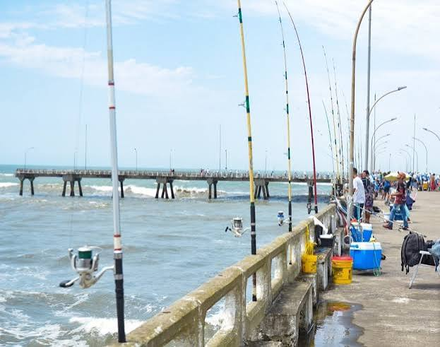
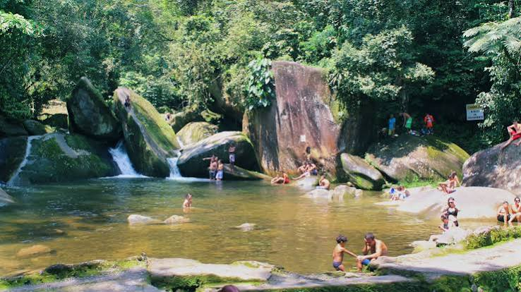

HISTORIA
A área inicial de Mongaguá, situada entre os rios Mongaguá e Aguapeú e habitada pelos índios guaranis, começou a ser percorrida em 1532 por colonizadores e missionários portugueses.
O local tornou-se pouso de viajantes que desfrutavam, sobretudo, da boa qualidade da água e da abundância de peixes.
A região, porém, só veio se desenvolver, de forma mais efetiva, no século XX como balneário.

Tornou-se distrito do município de Itanhaém em 24 de dezembro de 1948, com território formado pelo povoado de mesmo nome, acrescido de terras dos distritos sedes de Itanhaém e São Vicente. Em 18 de fevereiro de 1959, foi elevado a município autônomo.
Fonte: Fundação SEADE – 2006
DICAS TURISTICAS
Considerada a maior plataforma de pesca em concreto armado da América Latina, ela avança 400 metros mar adentro em formato de "T". Mesmo para quem não vai pescar, a caminhada oferece uma vista panorâmica incrível do horizonte.

Um dos recantos ecológicos mais famosos da região. Conta com uma queda-d'água que deságua em uma piscina natural rasa, excelente para banho em dias quentes. O local possui boa infraestrutura com banheiros, lanchonetes e passarelas.
